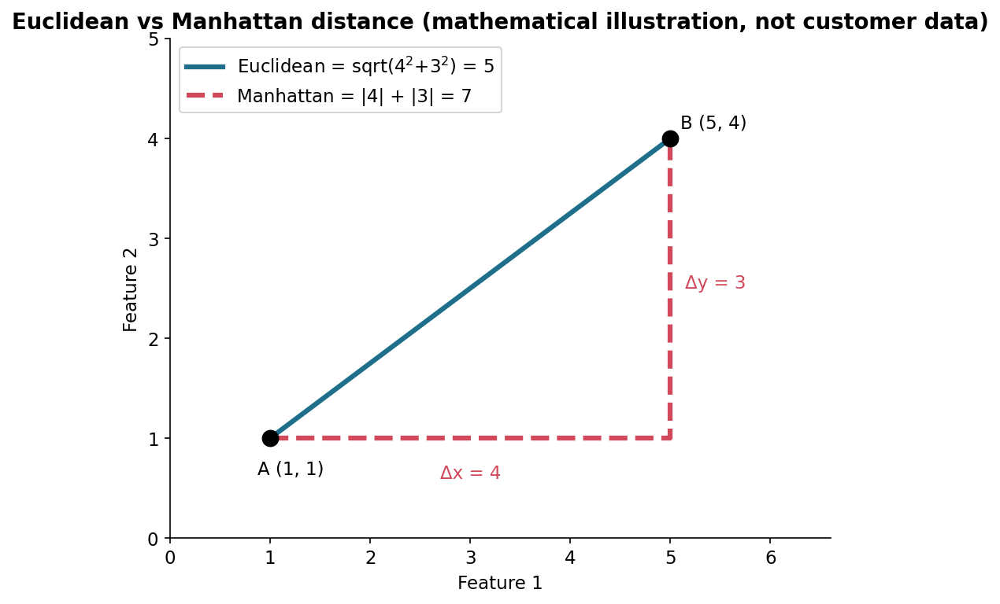
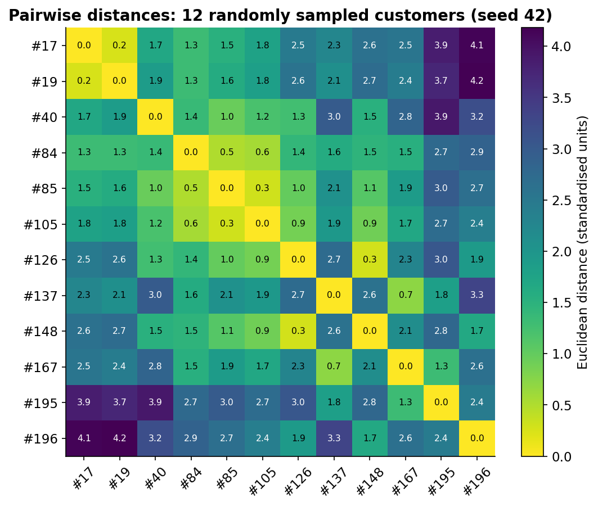
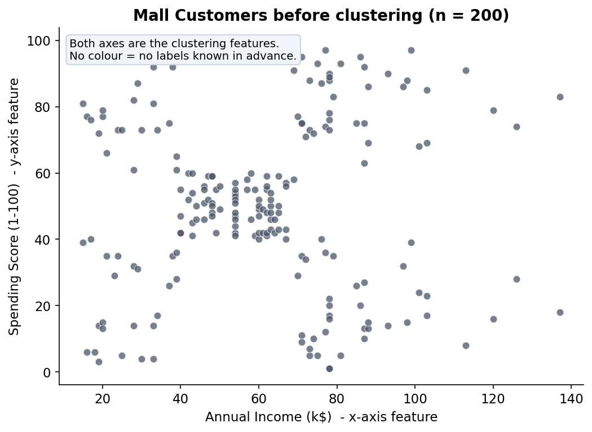
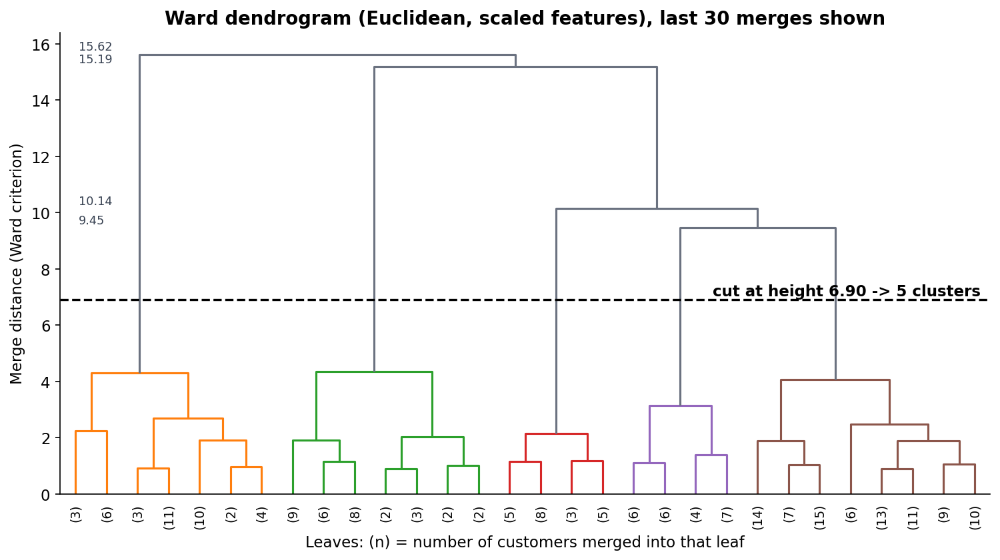
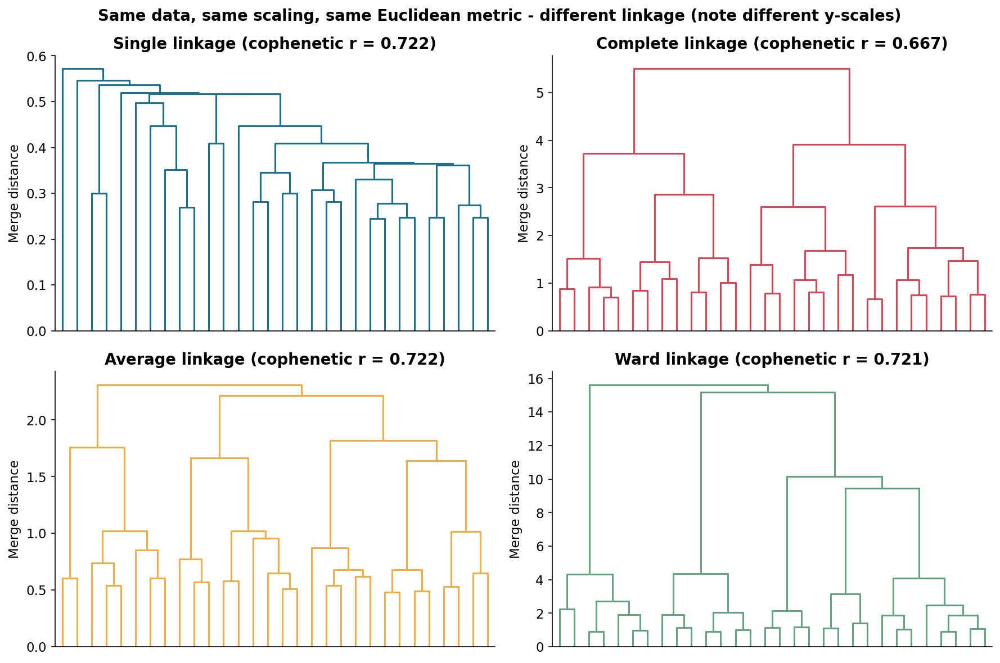
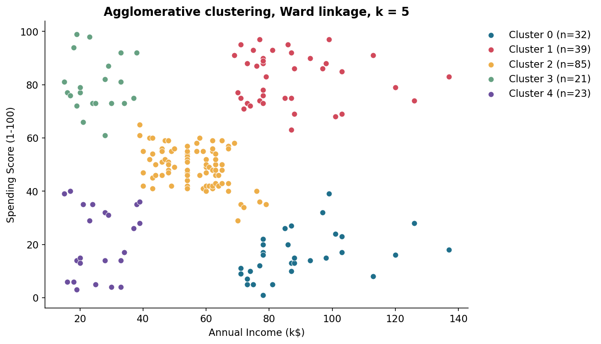
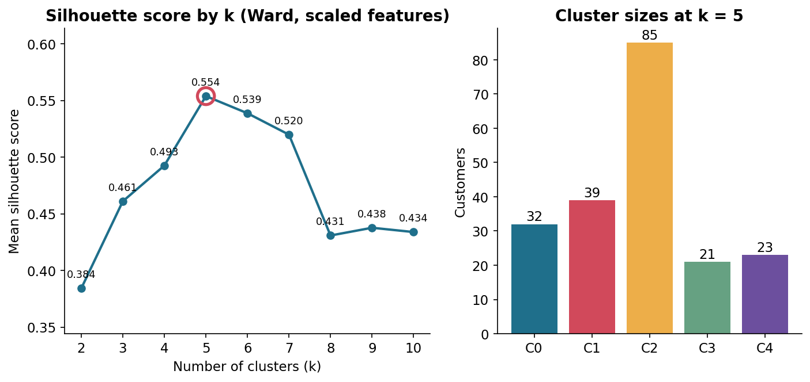
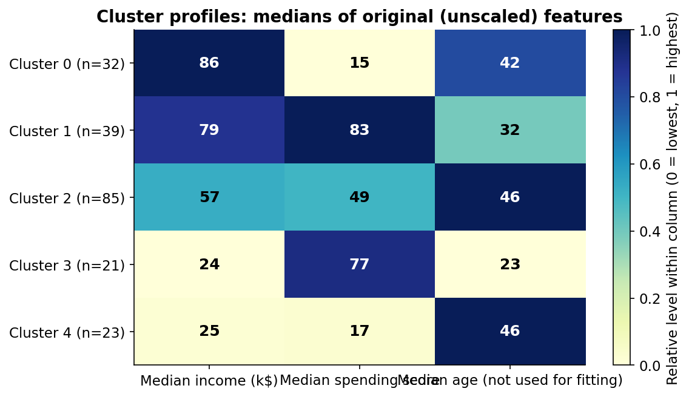

1. Introduction to hierarchical clustering
Clustering groups observations so that members of a group are more similar to each other than to other groups. It is unsupervised learning: there are no target labels to learn from, so the algorithm looks only for structure in the features.
Imagine a mall manager with each customer's income and spending score. Pair the two most similar shoppers, then pair the next closest, and keep joining groups until everyone is in one family tree. That tree is hierarchical clustering. Cutting the tree at different heights gives different numbers of groups.
Definition
Hierarchical clustering builds a nested sequence of clusters, from every point alone to all points together, and records the order and distance of each merge.
Uses include customer segmentation, grouping documents, biological taxonomy and exploratory analysis. Strengths: no need to fix k in advance, an interpretable tree, and flexible distance choices. Limits: a merge can never be undone, results change with linkage and scaling, outliers can distort trees, and it gets expensive for large datasets.
| Hierarchical | K-Means | |
|---|---|---|
| Number of clusters | Chosen after building the tree | Chosen before fitting |
| Output | Tree of nested clusters | Flat partition + centroids |
| Determinism | Deterministic (ties aside) | Depends on initialisation |
| Scale to large n | Poor (distance matrix) | Good |
| New points | No standard predict | Assign to nearest centroid |
Dataset used throughout
The Mall Customer Segmentation dataset: 200 customers, columns CustomerID, Gender, Age, Annual Income (k$), Spending Score (1-100), 0 missing values. We cluster on Annual Income (k$) and Spending Score (1-100) and exclude CustomerID. Download Dataset (CSV)
2. Types of hierarchical clustering
Agglomerative (bottom-up). Start with n singleton clusters. Repeatedly merge the two closest clusters until one remains: n − 1 merges in total.
Divisive (top-down). Start with one cluster containing everything and repeatedly split a cluster into two, e.g. with a flat method such as 2-means. Searching every possible split is exponentially expensive, so practical divisive methods use heuristics.
Agglomerative: {A} {B} {C} {D} → {A,B} {C} {D} → {A,B} {C,D} → {A,B,C,D}
Divisive: {A,B,C,D} → {A,B} {C,D} → {A,B} {C} {D} → singletons
In practice agglomerative clustering is the default in SciPy and scikit-learn, and it is the focus of this guide. Divisive methods can be better at capturing top-level structure but need more design choices and compute.
3. Distance metrics
Everything depends on how we measure how far apart two observations are. For points \(x, y \in \mathbb{R}^d\):
Here \(x_j\) is the j-th feature and \(d\) the number of features. Minkowski with p = 2 is Euclidean; p = 1 is Manhattan.
Worked example (mathematical illustration)
A = (1, 1), B = (5, 4). Euclidean: \(\sqrt{4^2+3^2}=5\). Manhattan: \(|4|+|3|=7\).

What Are You Looking At?
A mathematical illustration, not customer data. It compares two ways to measure the gap between the same two points.
How Was It Calculated?
Euclidean distance is the straight line; Manhattan distance follows horizontal then vertical steps. Values: Euclidean = 5, Manhattan = 7.
How Should You Read It?
Blue solid line = straight-line path. Red dashed path = grid path. Δx = 4 and Δy = 3 label the legs.
Key Takeaways
- Manhattan distance is never smaller than Euclidean distance.
- The metric you choose changes which points count as close.
Important Limitation
The two metrics agree only when the points differ in one coordinate. Real data are not guaranteed to behave like this 2-D toy case.
A distance matrix stores the distance for every pair of observations; hierarchical clustering repeatedly searches it for the closest pair of clusters.

What Are You Looking At?
Distances between 12 randomly sampled customers (IDs 17, 19, 40, 84, 85, 105, 126, 137, 148, 167, 195, 196).
How Was It Calculated?
After standardising income and spending score (z-scores, fitted on all 200 customers), pairwise Euclidean distances were computed with SciPy; the sample uses seed 42.
How Should You Read It?
Each cell is the distance between the row and column customer. Darker/greener means closer. The diagonal is 0. Smallest off-diagonal value: 0.25 (#17 and #19); largest: 4.18.
Key Takeaways
- The matrix is symmetric with zeros on the diagonal.
- Customers #17 and #19 are the closest pair in this sample and would merge first among them.
Important Limitation
Only 12 of 200 customers are shown for readability. Distances are in standardised units and change if the features or scaling change.
4. Linkage methods
Once clusters contain several points we need a cluster-to-cluster distance. For clusters \(A\) and \(B\):
- Single: nearest members. Can chain through bridges of points into long, stringy clusters.
- Complete: farthest members. Favours compact clusters of similar diameter.
- Average: a compromise between the two.
- Ward: merges the pair whose union gives the smallest increase in within-cluster sum of squares. It is defined for Euclidean distance, so we use Euclidean with Ward everywhere here.
Advanced detail: Ward's merge cost
The increase in total within-cluster variance when merging A and B is \(\Delta=\frac{|A||B|}{|A|+|B|}\lVert\bar a-\bar b\rVert^2\), where \(\bar a,\bar b\) are cluster centroids. SciPy reports the square root of twice this quantity as the merge height.
Same data, different linkage (cut into 5 clusters)
Cluster sizes on the scaled customer data: single [2, 195, 1, 1, 1], complete [21, 79, 23, 38, 39], average [3, 36, 38, 21, 102], Ward [39, 32, 21, 23, 85]. Single linkage leaves one cluster of 195 customers: chaining in action.
5. Understanding dendrograms
A dendrogram draws the merge history. Leaves (bottom) are observations or small groups. Each branch joins two clusters. Read it bottom to top: the height of a join is the linkage distance at which the merge happened. Heights are only comparable within one tree, because they depend on the metric and linkage. Ward heights and single-linkage heights are on different scales.
Tiny example
Points at 1, 2, 6, 7, 20 on a line with single linkage: (1,2) merge at height 1, (6,7) at 1, those two groups at 4, and 20 joins at 13.
6. Choosing the number of clusters
A horizontal cut at height \(h\) splits the tree: count the vertical lines it crosses to get the number of clusters. Lower cuts give more, smaller clusters; higher cuts give fewer, larger ones. A good cut often sits across a large jump between consecutive merge heights.
For our Ward tree the top merge heights are 4.31, 4.35, 9.45, 10.14, 15.19, 15.62. The jump from 4.35 to 9.45 supports a cut near 6.90, which gives 5 clusters.
Graph gallery
Eight graphs, all produced by generate_graphs.py from the real CSV. Select one to jump to it.

Graph 1Graph 2Graph 3
Graph 4
Graph 5
Graph 6
Graph 7
Graph 8What Are You Looking At?
Each dot is one of the 200 customers, placed by annual income (x) and spending score (y). No groups are assumed yet.
How Was It Calculated?
Raw values from data/Mall_Customers.csv; no preprocessing was applied for display.
How Should You Read It?
Further right = higher income; higher up = higher spending score. Look for gaps and dense regions.
Key Takeaways
- The data show several visible dense regions and gaps.
- Income and spending score are on different numeric ranges, which matters for distances.
Important Limitation
Visual impressions are subjective, and two features are a tiny slice of customer behaviour.
What Are You Looking At?
The merge tree for all 200 customers, truncated to its last 30 merges so it is readable. Numbers in brackets are how many customers each leaf holds.
How Was It Calculated?
StandardScaler on income and spending score; SciPy linkage(method='ward', metric='euclidean'). The dashed line is at 6.90, midway between the merges that produce 5 and 6 clusters.
How Should You Read It?
Bottom = individual or merged customers; height = Ward merge distance. Branches below the line share a colour and form one cluster; heights above the line are annotated on the left.
Key Takeaways
- The cut at 6.90 yields 5 clusters.
- The final merge happens at 15.62, far above the cut.
Important Limitation
The cut height is a modelling choice. Heights apply only to Ward linkage with this scaling.
What Are You Looking At?
Four dendrograms of the same scaled data, one per linkage method.
How Was It Calculated?
SciPy linkage with Euclidean distance for all four methods, same scaled features. Cophenetic correlation is shown in each title.
How Should You Read It?
Each y-axis is a different distance scale. Compare tree shapes, not heights.
Key Takeaways
- Single linkage produces a stringy, chained tree; at k = 5 it gives sizes [2, 195, 1, 1, 1].
- Ward and complete give balanced groups: [39, 32, 21, 23, 85] and [21, 79, 23, 38, 39] at k = 5.
Important Limitation
Cophenetic correlation measures how well a tree preserves original distances; it does not say a clustering is meaningful. Curves are truncated to 30 leaves.
What Are You Looking At?
The 5 computed clusters in original income and spending-score units.
How Was It Calculated?
scikit-learn AgglomerativeClustering(n_clusters=5, linkage='ward') fitted on standardised features. Silhouette = 0.554, Davies–Bouldin = 0.578; cluster sizes [32, 39, 85, 21, 23].
How Should You Read It?
Colour = computed cluster id (0 to 4). Ids are arbitrary labels, not known customer types.
Key Takeaways
- The clusters occupy distinct regions of the income-spending plane.
- Cluster ids carry no meaning beyond grouping.
Important Limitation
Labels are algorithm output, not ground truth. A different linkage or scaling gives different groups.
What Are You Looking At?
Mean silhouette score for each candidate number of clusters, with the sizes of the chosen solution.
How Was It Calculated?
Ward linkage on standardised features for k = 2 to 10; scikit-learn silhouette_score (Euclidean).
How Should You Read It?
Higher is generally better separation and cohesion. The circled point is the maximum: k = 5 (0.554). For comparison k = 4 gives 0.493, k = 6 gives 0.539.
Key Takeaways
- The silhouette score peaks at k = 5.
- k = 6 and k = 7 are close (0.539, 0.520), so the choice is not razor-sharp.
Important Limitation
Silhouette favours compact, round clusters and does not prove a clustering is correct. Use it with domain judgement.
What Are You Looking At?
A summary of how the clusters differ on typical income, spending score and age.
How Was It Calculated?
Medians of the original (unscaled) features, grouped by computed cluster. Age was not used to fit the clusters.
How Should You Read It?
Rows are clusters, columns are features. Printed numbers are medians; colour shows relative level within each column.
Key Takeaways
- Clusters differ mainly in income and spending score, the fitted features.
- Age patterns are descriptive only, since age was not part of fitting.
Important Limitation
With 21 to 85 customers per cluster, small differences may be noise. Age differences do not mean age caused the grouping.
7. Feature scaling and preprocessing
Euclidean distance adds squared differences, so a feature with a bigger numeric range dominates. Income here spans 15 to 137 (k$) and spending score 1 to 99: similar, but not identical, spreads. In general mixed units make scaling essential.
Check and handle missing values first (this dataset has 0); drop identifiers like CustomerID, which carry no behavioural information; and document every choice, because different scaling can change the clusters.
8. Python implementation
Download Dataset (CSV) Settings used: features = income and spending score, StandardScaler, Euclidean distance, Ward linkage, k = 5, seed 42 (only used for the sampled subset in Graph 3).
import pandas as pd, numpy as np, matplotlib.pyplot as plt
from sklearn.preprocessing import StandardScaler
from scipy.cluster.hierarchy import linkage, dendrogram
from sklearn.cluster import AgglomerativeClustering
from sklearn.metrics import silhouette_score
df = pd.read_csv("data/Mall_Customers.csv") # load
print(df.shape, df.isna().sum().sum()) # (200, 5) 0 missing
X = df[["Annual Income (k$)", "Spending Score (1-100)"]] # CustomerID excluded
Xs = StandardScaler().fit_transform(X) # z-scores
Z = linkage(Xs, method="ward", metric="euclidean") # full merge history
dendrogram(Z, truncate_mode="lastp", p=30) # visualise
plt.show()
model = AgglomerativeClustering(n_clusters=5, linkage="ward")
labels = model.fit_predict(Xs) # labels 0..4
df["Cluster"] = labels
print(silhouette_score(Xs, labels))linkage returns an (n − 1) × 4 matrix: the two merged cluster ids, the merge height and the new cluster size. fit_predict returns one label per row. Note that AgglomerativeClustering has no predict() for unseen samples. The full, reproducible script is generate_graphs.py.
9. Cluster evaluation and interpretation
- Silhouette \(s=\frac{b-a}{\max(a,b)}\): higher is better. For k = 5: 0.554.
- Davies–Bouldin: average similarity of each cluster to its most similar one; lower is better. For k = 5: 0.578.
- Cophenetic correlation: evaluates the tree, not a flat cut. Ward 0.721, average 0.722, single 0.722, complete 0.667.
Silhouette and Davies–Bouldin judge a flat clustering; cophenetic correlation judges the dendrogram. Profiles (medians of original features):
| Cluster | Size | Median income (k$) | Median spending score | Median age |
|---|---|---|---|---|
| 0 | 32 | 86.5 | 15 | 41.5 |
| 1 | 39 | 79 | 83 | 32 |
| 2 | 85 | 57 | 49 | 46 |
| 3 | 21 | 24 | 77 | 23 |
| 4 | 23 | 25 | 17 | 46 |
Limitation
Metrics are heuristics tied to a geometry (compact, convex clusters). No single score proves the clusters are objectively correct.
10. Common mistakes
- Not scaling when features have different units.
- Clustering on ID columns, which injects arbitrary numbers.
- Picking a linkage blindly: single linkage gave a 195-customer cluster here.
- Comparing heights across methods; each has its own scale.
- Trusting a cut as optimal; it is a heuristic.
- Misreading silhouette: a high score does not mean the groups are meaningful.
- Over-reading small profile differences in small clusters.
- Claiming causation or that every individual fits their cluster.
11. Real-world applications
| Use | Strength | Limitation |
|---|---|---|
| Customer segmentation | Explore group structure at several granularities | Segments depend on chosen features and scaling |
| Document/text grouping | Topic trees from cosine distance | High-dimensional, sparse data; costly at scale |
| Biological classification | Trees match evolutionary thinking | Distance choice and noise strongly affect results |
| Similarity analysis | Visual dendrogram of related items | Heights are hard to compare across methods |
| Exploratory data analysis | No k needed up front | Findings are hypotheses, not conclusions |
12. Interview questions and revision notes
What is hierarchical clustering?
An unsupervised method that builds a nested hierarchy of clusters, usually shown as a dendrogram, without fixing the number of clusters in advance.
Agglomerative vs divisive?
Agglomerative starts with every point alone and repeatedly merges the closest pair of clusters (bottom-up). Divisive starts with one cluster and recursively splits (top-down). Agglomerative is far more common because exhaustive splitting is expensive.
Euclidean vs Manhattan distance?
Euclidean is the straight-line L2 distance; Manhattan sums absolute coordinate differences (L1). Manhattan is less dominated by one large difference. Both are Minkowski distances (p = 2 and p = 1).
Name the four main linkages.
Single (minimum pair distance, prone to chaining), complete (maximum pair distance, compact clusters), average (mean pair distance), Ward (merge that least increases within-cluster variance; Euclidean only in the standard form).
How do you read a dendrogram?
Leaves are observations; each U-shaped join is a merge; its height is the merge distance under the chosen metric and linkage. Higher merges join more dissimilar clusters.
How do you choose the number of clusters?
Cut the dendrogram where there is a large jump in merge heights, and cross-check with silhouette score, Davies–Bouldin, cluster sizes and domain usefulness. It is a heuristic, not proof.
Why scale features?
Distances are dominated by features with larger numeric ranges. Standardising gives each feature comparable influence, though the right choice depends on the problem.
What does a silhouette score mean?
For each point, (b − a) / max(a, b), where a is mean distance to its own cluster and b the mean distance to the nearest other cluster. It ranges from −1 to 1; higher generally means better separation and cohesion.
Computational complexity?
A naive implementation needs O(n²) memory for the distance matrix and about O(n³) time. Better algorithms reach O(n² log n), and some linkages (e.g. single) O(n²). It scales poorly to very large n.
Main advantages and limitations?
Advantages: no k needed up front, interpretable hierarchy, works with many metrics. Limitations: merges are irreversible, sensitive to noise, outliers and linkage choice, and memory/time grow quickly with n.
Can an AgglomerativeClustering model predict new points?
Not in the usual sense: it has fit_predict / labels_ but no predict() for unseen samples. You would assign new points yourself (e.g. nearest cluster) or refit.
Summary
Hierarchical clustering merges (or splits) groups using a distance metric and linkage rule, records the history in a dendrogram, and lets you cut the tree for any k. Scale features, document choices, and judge results with several lenses.